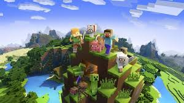

<
for game info
this page for info about game
1stminecraft
Minecraft is a 2011 sandbox game developed and published by Swedish video game developer Mojang Studios. Originally created by Markus "Notch" Persson using the Java programming language, the first public build was released on 17 May 2009. The game would continue to be developed over the span of two years, until its full release on 18 November 2011. Afterwards, Persson left Mojang and gave Jens "Jeb" Bergensten control over the game's development. In the years since its release, it has been ported to several platforms, including smartphones, tablets, and various video game consoles, primarily by 4J Studios.[f] In 2014, Mojang and the Minecraft intellectual property were purchased by Microsoft for US$2.5 billion. Minecraft has since become the best-selling video game of all-time, with over 300 million copies sold and nearly 140 million monthly active players as of 2023.

Document